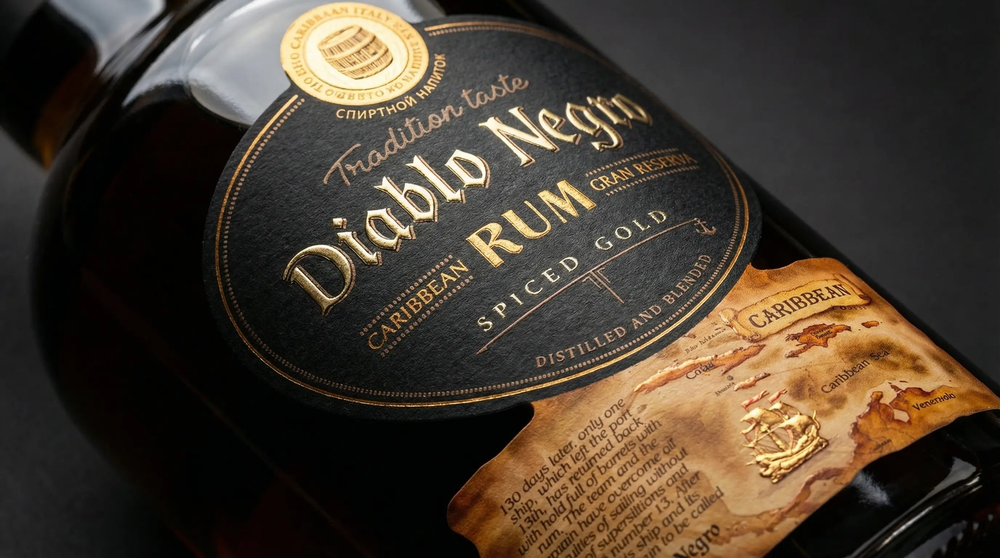

Материалы и возможности
Реализуем самые смелые дизайнерские концепции
Особенности производства:
Производство этикеток для алкоголя требует хирургической точности совмещения красок и отделочных процессов.
- Нестандартная вырубка: Создаем сложные контуры (например, горловые кольеретки), состоящие из нескольких элементов.
- Интеграция "Честный ЗНАК": Аккуратно вписываем обязательные Data Matrix коды прямо в дизайн этикетки, сохраняя ее эстетичный вид.
- Лимитированные серии: Используем цифровую печать для крафтовых пивоварен, малых виноделен и подарочных серий с переменной нумерацией.
- Двойное тиснение: Одновременное использование двух цветов фольги (например, золото и медь) для создания глубокого рельефа и максимального блеска.

Чек-лист (PDF)
7 критических ошибок при заказе этикеток для алкогольной продукции
Скачайте бесплатный PDF-файл, который убережет вас от слива бюджета. Узнайте, как избежать отклеивания этикетки в холодильнике, деформации материала на бутылке и ошибок с выбором клея.
✓ Чек-лист успешно отправлен на вашу почту!
Частые вопросы по алкогольным этикеткам
Отвечают технологи Типографии РОСТ
Выдержит ли этикетка погружение в ведерко со льдом?
Безусловно. Для вин и шампанского мы используем специальные водо- и щелочестойкие бумаги в комбинации с усиленным адгезивом (клеем). Такая этикетка не размокает, не отклеивается и сохраняет идеальный вид даже при сильном конденсате и перепаде температур.
Можно ли сделать тиснение на очень фактурной бумаге?
Да. У нас богатый опыт горячего тиснения фольгой по сложным, пористым "винным" материалам. Под каждую задачу мы подбираем индивидуальное латунное клише и нужный тип фольги, чтобы элементы получались четкими и блестящими.
Какой у вас минимальный тираж?
Для эксклюзивных и крафтовых напитков мы предлагаем цифровую рулонную печать — тиражи могут стартовать от 500-1000 штук. Если же речь идет о массовом производстве водки или пива, флексопечать обеспечит вам максимальную экономию на объемах от 10 000 штук.
Печатаете ли вы коды "Честный ЗНАК" и акцизные номера?
Да, мы официально работаем с переменными данными и системой «Честный ЗНАК». Коды Data Matrix могут быть как напечатаны в виде отдельного прозрачного/белого стикера-пломбы, так и органично встроены прямо в основной дизайн вашей этикетки с учетом свободных зон.